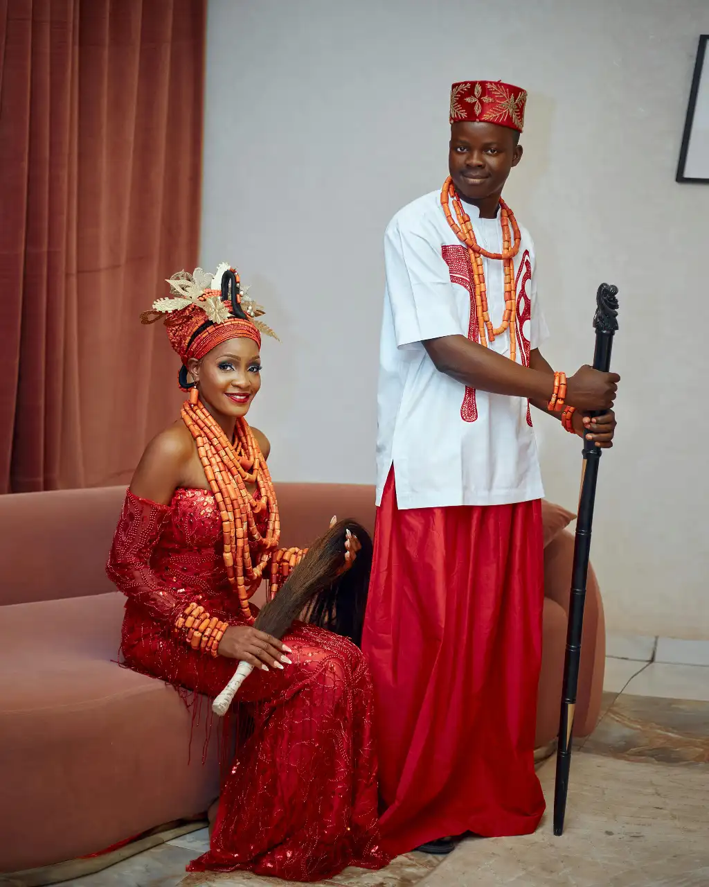

Nigerian Wedding Culture
Nigeria is a country rich in culture, and weddings reflect the deep traditions and colorful customs of its many ethnic groups. From the Yoruba engagement ceremony to the Igbo wine-carrying and the Hausa courtship rituals, every tradition is a celebration of unity, family, and love.
Each tribe has unique customs, attire, music, and cuisine that make weddings memorable. Traditional attires like the agbada, isiagu, gele, and ankara are worn with pride. Drumming, dancing, and storytelling also play a central role in the festivities.